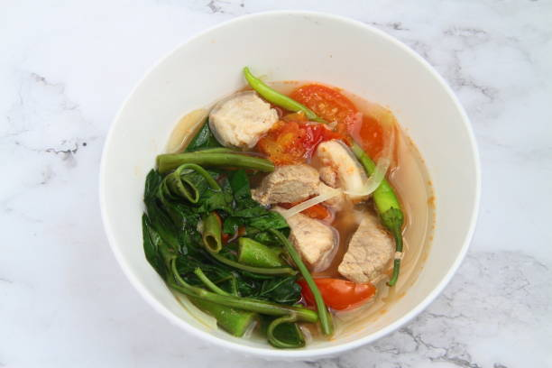

Sinigang na Baboy

Sinigang is a sour soup native to the Philippines. This recipe uses
pork as the main ingredient. Other proteins and seafood can also be
used. Beef, shrimp, fish are commonly used to cook sinigang. The c
hicken version, on the other hand, is called sinampalukang manok.
I prefer to use either pork belly or buto-buto when cooking sinigang.
The latter refers to cuts with bones intact. These are either pork
neck bones, chopped spare ribs, and chopped baby back ribs. Pork
shoulder and ham can also be used when cooking sinigang.
Ingredients:
- 2 lbs pork belly or buto-buto
- 1 bunch spinach or kang-kong
- 3 tablespoons fish sauce
- 12 pieces string beans sitaw, cut in 2 inch length
- 2 pieces tomato quartered
- 3 pieces chili or banana pepper
- 1 tablespoons cooking oil
- 2 quarts water
- 1 piece onion sliced
- 2 pieces taro gabi, quartered
- 1 pack sinigang mix good for 2 liters water
Instructions:
- Heat the pot and put-in the cooking oil
- Sauté the onion until its layers separate from each other
- Add the pork belly and cook until outer part turns light brown
- Put-in the fish sauce and mix with the ingredients
- Pour the water and bring to a boil
- Add the taro and tomatoes then simmer for 40 minutes or until pork is tender
- Put-in the sinigang mix and chili
- Add the string beans (and other vegetables if there are any) and simmer for 5 to 8 minutes
- Put-in the spinach, turn off the heat, and cover the pot. Let the spinach cook using the remaining heat in the pot.
- Serve hot. Share and enjoy!
Back to Index